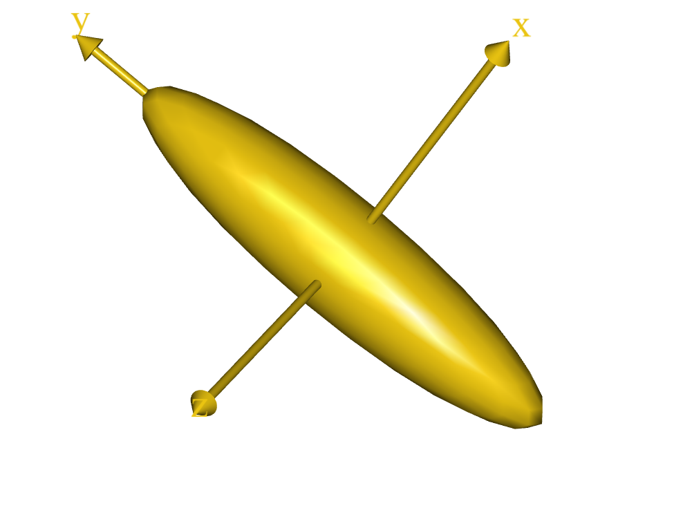
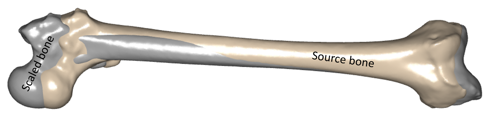
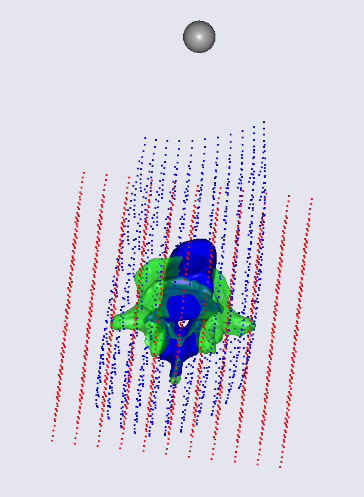
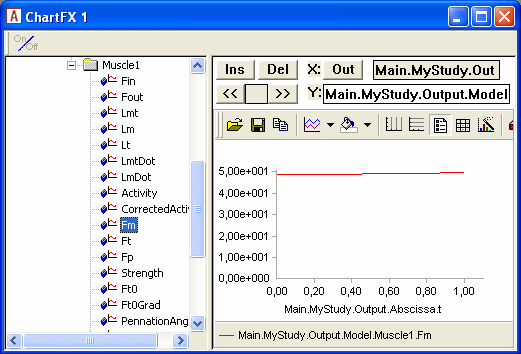
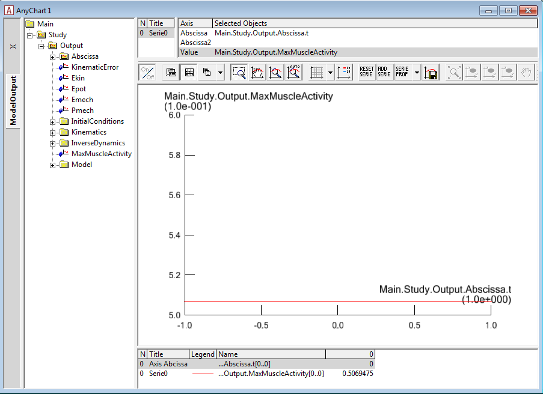
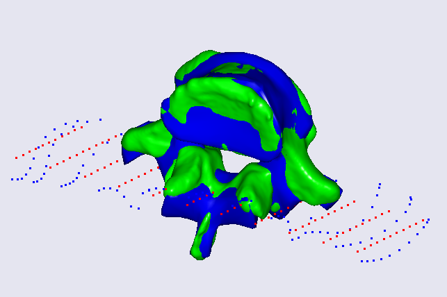
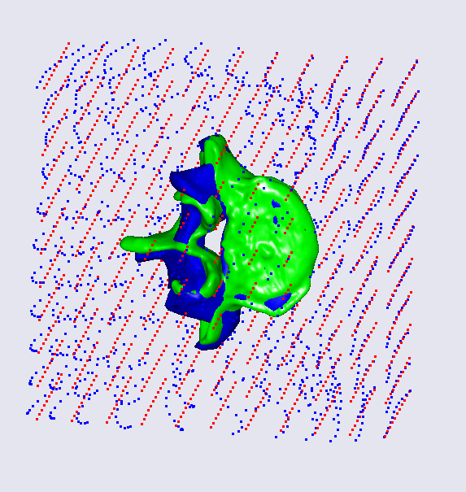
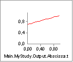
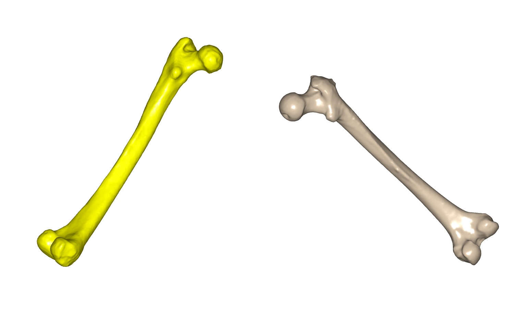

Appendix: Morphing based on landmarks¶
This tutorial is an appendix to the Lesson 1, where construction of an advanced scaling function is introduced.
This lesson is a brief introduction to the interpolation functions based on the nonlinear Radial Basis Functions (RBF) approach, which is used as the core of advanced transformations. AnyFunTransform3DRBF and AnyFunTransform3DSTL classes are covered by this lesson.
Nonlinear point based scaling transformation¶
Most of the described scaling schemes are based on anthropometric measurements and linear scaling transforms. As such they do not reconstruct needed bone morphology to a very high level of detail, i.e. local deformities of certain bone features may not be covered by such scaling. However, there is still a wide range of applications for them. But in this lesson we will focus on the nonlinear transformation.
The morphing function described in this lesson transforms (not necessary in a linear manner) a set of given points (source landmarks) into a set of known subject-specific points (target landmarks). For this purpose the following approximation is constructed:
\(f\left( y \right) = \sum_{j = 1}^{n}{c_{j}\phi(\left\| y - x_{j} \right\|)} + p_{q}(y)\),
where\(\ c_{j}\) are the coefficients of the RBF functions \(\phi\), computed based on the source and target landmarks, \(p\) is the polynomial of order \(q\), and \(\phi\) is the RBF function, which can take different forms. Here, we are just looking at one of the following forms:
\(\phi\left( r \right) = e^{- \text{ar}^{2}},\ a > 0\), – Gaussian function, or
\(\phi(r) = r^{2} \bullet ln(r)\) – thin plate spline, or
\(\phi\left( r \right) = \sqrt{r^{2} - a},\ \ a < r^{2}\), – multiquadratic function.
Other forms can be found in the reference manual.
To define such a transform in AnyScript we can use a template provided by the AnyBody Modeling System:
AnyFunTransform3DRBF <ObjectName> = {
//PreTransforms = {};
/*RBFDef = {
Type = RBF_Gaussian;
Param = 1;
};*/
Points0 = ;
//RBFCoefs = {};
//PolynomDegree = -1;
//PolynomCoefs = {};
//PointNames = ;
//PointDescriptions = ;
//Points1 = ;
/*BoundingBox = {
Type = BB_Cartesian;
ScaleXYZ = {2, 2, 2};
DivisionFactorXYZ = {1, 1, 1};
};*/
//BoundingBoxOnOff = Off;
};
The PreTransforms member allows inclusion of other transforms to be a part of the transform that is being constructed. The pre-transforms will be applied on both, source landmarks, Points0, and on the object that will be processed using this transform.
The Points0 variable is a \(3\ \times \ k\) matrix of the source landmark coordinates, where k is the number of source points. Points1 is the matrix of target landmarks of the same size. These two entities alone define a 3D RBF transform.
The PolynomDegree variable corresponds to the \(q\) degree of the polynomial term of the aforementioned approximation. Recommended degree is 1, i.e. a linear component. This kind of approximation gives good results in our empirical observations.
RBFDef.Type defines a type of the RBF function. Possible options are
RBF_Gaussian (default), RBF_ThinPlate, RBF_Biharmonic,
RBF_Triharmonic, RBF_MultiQuadratic, and RBF_InverseMultiQuadratic as
can be found in the reference manual. This type of specification is an
important parameter as it defines the interpolation/extrapolation
behavior of the RBF transform. Further, we will demonstrate the
difference of using different radial basis functions.
RBFDef.Param corresponds to the parameter \(a\) mentioned in the definitions of the Gaussian and the multiquadratic RBF function. By varying this parameter it is possible to change the behavior of a chosen RBF function, e.g. prescribe a local effect of the landmarks.
PointNames is a string array to give text identifiers for the landmarks. This can be used to be output to landmarks to process in external packages. Similarly, PointDescriptions is an additional storage for more detailed information on how to locate the landmarks.
An alternative way to define an RBF transform is to specify the required approximation coefficients explicitly. This can be done by defining the RBFCoefs and PolynomCoefs variables. However, this is a very demanding and non-intuitive procedure and the preferable way is to define the corresponding sets of landmarks.
As it is clear from the description the following block describes a bounding box. This bounding box is computed on provided source landmarks and used to construct additional landmarks for the construction algorithm. It will internally increase the size of Points0 and Points1 members to \((k + n) \times 3\). This is done to improve the extrapolation behavior of the AnyFunTransform3DRBF object. Please note that it will use the same bounding box points for both, source and target set, and, therefore, using BoundingBoxOnOff requires the landmark sets to be registered prior to using this feature. The latter can be done by using AnyFunTransform3DLin2 or others.
There are two ways to compute an auxiliary bounding box – the first way
is to compute it in the Cartesian coordinate system, the other way is to
look at the principal axes. This can be changed by modifying the
BoundingBox.Type parameter to be either BB_Cartesian or
BB_PrincipalAxes.
The parameter BoundingBox.ScaleXYZ defines a vector of scaling factors that will be applied to the bounding box dimensions, which will expand or shrink the field of the extrapolation improvements.
The next parameter is BoundingBox.DivisionFactorXYZ. This parameter specifies how many additional auxiliary points we require for the transform construction along different axes. For example, we can request to divide the Y axis by three points instead of two by setting this vector to {1,2,1}.
Finally, the BoundingBoxOnOff flag is a switch for the inclusion or exclusion of the auxiliary landmarks for the construction of the transform.
Nonlinear surface based scaling transform¶
- The previous section describes an interpolation and extrapolation
transform that works on discrete points in space. However, often the selection of these landmarks is unintuitive and we may require an automated tool to assist us in this task. A surface-based RBF class, AnyFunTransform3DSTL, was developed for this purpose:
AnyFunTransform3DSTL <ObjectName> =
{
//PreTransforms = ;
/*RBFDef =
{
Type = RBF_Gaussian;
Param = 1;
};*/
//FileName0 = ;
//ScaleXYZ0 = {1, 1, 1};
//SurfaceObjects0 = ;
//FileName1 = ;
//ScaleXYZ1 = {1, 1, 1};
//SurfaceObjects1 = ;
NumPoints = 0;
//UseClosestPointMatchingOnOff = On;
//PolynomDegree = -1;
//PolynomCoefs = ;
/*BoundingBox =
{
Type = BB_Cartesian;
ScaleXYZ = {2, 2, 2};
DivisionFactorXYZ = {1, 1, 1};
};*/
//BoundingBoxOnOff = Off;
};
Similarly to the AnyFunTransform3DRBF, the pre-transforms will be
included into the transformation that is being constructed. As well as
that auxiliary bounding box points will be added to the transform
exactly like in AnyFunTransform3DRBF.
FileName0 and FileName1 specify surface files that will be used for the
construction of the transform. The underlying method is exactly the same
as in the AnyFunTransform3DRBF, except that source and landmarks now
will be found automatically.
ScaleXYZ0 and ScaleXYZ1 members are scaling vectors that can be used to
scale or mirror the surfaces. For example, unit change from millimeters
to meters can be done by multiplying the components of the vectors with
0.001.
However, it is best to use SurfaceObjects0 and SurfaceObjects1 to define
the input, since these objects can also be pretransformed using various
linear and nonlinear transformations, i.e. registration from the
coordinate system of the CT scanner to the anatomical frame.
SurfaceObjects0 and SurfaceObjects expect references to the AnySurfSTL
objects, that already contain ScaleXYZ, and, thus, will not use
ScaleXYZ0/ScaleXYZ1.
The NumPoints parameter specifies how many landmarks will be used to construct a
transformation. This number of source landmarks is seeded on the vertices of the
source STL surface. To find matching pairs the closest points are found
on the target surface. Please note that it is assumed that the
geometries are well aligned using AnyFunTransform3DLin2 or
AnyFunTransform3DRBF, and therefore, the error of the closest point
algorithm is negligible.
RBF point-based scaling example¶
This section introduces an example of using AnyFunTransform3DRBF function. We have prepared a model, where the transform is already constructed using some pre-defined settings. The intention of this example is to see how different parameters affect the scaling law. Thus, we will adjust the parameters and observe how that changes the results.
Let us start by downloading the model:
AppendixA.zip
The downloaded model consists of a two-component transformation pipeline (the first step is a point-based affine, the second one is an RBF transform), a set of points aligned in a grid, and the source and target surfaces that will be used to check the result of the morphing. The origin of the coordinate system is also drawn as a grey sphere used as a visual reference. If we load the model and look at the Model View, you can observe two point clouds – a red one that corresponds to the point cloud prior to the RBF transform, and a blue one that corresponds to the result of application of the RBF transform:

Now we take a look at the content of the file grid.any. This file contains a matrix of grid coordinates that is used to exemplify how the morphing works and show the deformations. It is possible to switch on and off grid planes. This can be done by setting the corresponding flags to 0 or 1. For example, if the GridAll flag is set to 1, all grid planes will be visualized. The other way around, if GridAll is 0 and only GridX5 is set to 1, then just the fifth grid plane will be visualized. This functionality was added to enable more flexible visualization to better understand the behaviour of the transform in this tutorial. Thus, we will switch on and off some layers during this lesson to explain some effects. Please note that if GridX11 is switched off then it is required to remove the comma at the end of the AnyScript block, which contains the last plane of the grid.
Let us proceed to the explanation of the first block of parameters. At first, we change the RBFDef.Param and see how this internal parameter of radial basis function affects the behavior of the scaling law. Let us try to set it to A: 0.2, B: 2, C: 20, and D: 200.
AnyFunTransform3DRBF RBFTransform = {
PreTransforms = {};
RBFDef = {
Type = RBF_Gaussian;
Param = 2;
};
...
};
A  |
B  |
|---|---|
C  |
D  |
We can see strange behaviour of the deformation field that is hard to explain, however, you can notice that the deformed grid is approaching the origin of the coordinate system, when the parameter increases. Let us look back at the definition of the Gaussian radial basis function: \(\phi\left( r \right) = e^{- \text{ar}^{2}}\ \). We can see that the exponential nature will decrease the influence of the r component. However, if the parameter is too large the influence of radial distances will be minor and insignificant. Thus, it is necessary to keep the balance between this parameter and expected size of the object being scaled.
You can also notice that the suggested morphing is not that good; however, just 4 landmarks were used to construct this transform. Now we know the recommendations on RBFDef.Param require it to be rather small. Let us fix this parameter to 0.2 and try to increase the number of landmarks by uncommenting all the landmarks provided in the example for both source and target sets – will it increase the accuracy?
AnyMatrix SourceLandmarks = {
{0.0709736, 0.0184485, -0.000127864},
{0.0648285, 0.0049608, 0.000451266},
{0.0621017, -0.00819697, 0.00140694},
{0.0553114, 0.0230441, -0.000445997},
{0.0393397, 0.0248069, -0.000680061},
{0.0377703, 0.0133058, -0.00105235},
{0.0360412, 0.00201606, -0.000391467},
{0.0472074, -0.00352919, -0.000413361},
{0.0550465, 0.0208449, -0.0224952},
{0.0520597, 0.00993834, -0.0203476},
{0.0489349, -0.0013904, -0.0225025},
{0.0546416, 0.0207262, 0.0225993},
{0.0528326, 0.0103044, 0.0202943},
{0.0499033, -0.00157613, 0.0225706},
{0.0359901, 0.0268197, -0.014787},
{0.034303, 0.0187035, -0.0094985},
{0.0172761, 0.0312099, -0.0202515},
{0.0305037, 0.0326659, -0.0163874},
{0.0367762, 0.026968, 0.0138197},
{0.0352582, 0.0191998, 0.00955337},
{0.0166408, 0.0316569, 0.018449},
{0.0302597, 0.0327436, 0.0168596},
{0.0257677, 0.0215728, -0.0350927},
{0.0306725, 0.0206658, -0.0314054},
{0.0287405, 0.0202933, -0.029373},
{0.0261867, 0.0213401, 0.0353598},
{0.0305148, 0.0210284, 0.0312686},
{0.028598, 0.0211475, 0.0296013},
{0.0187725, -0.00176881, -0.013463},
{0.0184676, -0.00178103, 0.0131414},
{0.00214891, 0.015245, -0.000660534},
{-0.001729, 0.0102335, -0.000314431},
{0.00463535, 0.0115322, -0.00400253},
{0.0038934, 0.0115578, 0.0037766},
{0.0195611, 0.0216146, -6.12942e-005},
{0.0142823, 0.00469346, -0.000166401}
};
AnyMatrix TargetLandmarks = 0.001*{
{-11.6256, -134.079, 34.0564},
{-11.4732, -141.378, 42.8396},
{-11.8893, -147.6, 55.5568},
{-10.9339, -149.757, 22.2911},
{-10.0394, -169.576, 15.2177},
{-10.0568, -167.821, 26.3967},
{-11.3658, -172.414, 35.9614},
{-11.1052, -161.143, 44.4721},
{16.8688, -150.921, 26.3913},
{11.4513, -156.085, 35.6888},
{11.6961, -163.765, 48.3554},
{-40.0495, -148.356, 22.7364},
{-32.158, -154.956, 33.4061},
{-37.8105, -163.072, 42.9189},
{10.2577, -166.946, 16.7679},
{4.25147, -170.334, 24.5256},
{11.4583, -186.266, 4.15902},
{9.00427, -170.432, 2.29037},
{-29.5786, -166.347, 13.1397},
{-24.1207, -168.331, 22.0858},
{-27.4179, -185.915, 3.44909},
{-29.2773, -172.733, 0.305996},
{34.5511, -177.928, 19.9739},
{26.6359, -171.323, 23.5182},
{22.3573, -180.006, 17.6042},
{-54.5362, -177.697, 16.5518},
{-44.3674, -167.961, 21.4712},
{-42.6288, -177.637, 14.5326},
{4.9324, -191.139, 37.1707},
{-27.1454, -195.058, 36.7413},
{-14.8139, -202.147, 5.60439},
{-15.0298, -213.168, 8.54038},
{-10.9629, -201.601, 13.6267},
{-16.7362, -203.051, 12.2525},
{-10.9261, -181.616, 7.78731},
{-12.5005, -196.124, 24.7113}
};
...
AnyFunTransform3DRBF RBFTransform = {
PreTransforms = {};
RBFDef = {
Type = RBF_Gaussian;
Param = 0.2;
};
...
};
Now we see that the scaling does not work at all. The problem here is
that the Gaussian type of the RBF transform is sensitive to the number
of landmarks, and does not work well with a too large number of them.
The solution here is to switch RBFDef.Type to RBF_ThinPlate:
AnyFunTransform3DRBF RBFTransform = {
PreTransforms = {};
RBFDef = {
Type = RBF_ThinPlate;
Param = 0.2;
};
...
This modification fixes the problem for the bony surfaces and their
vicinities – now they look alike. Thus, it is recommended to use
RBF_Gaussian type only with low number of landmarks. RBF_ThinPlate is
recommended for larger numbers. However, you may also choose between
RBF_ThinPlate and RBF_Gaussian based on their performance.
Now we can morph the bone surface itself and some points that are close to the surface. But what about the extrapolation problem, which is supposed to handle all muscle/ligament attachments and other points? It is clear that in such form this solution is not viable, and even dangerous as the last picture shows. There are two not necessarily exclusive approaches to handle this problem.
The first solution is to look back at the equation of approximation and notice that at this point we are still not utilizing the polynomial term. Let us try to switch it on and set the polynomial degree to 1, which is recommended by the reference manual. Now our approximation looks smoother and probably more reasonable:
However, one may still think that the extrapolated points are lying too far out. There is one more modification that may affect this solution. We can define the behavior of the extrapolation by suggesting the boundaries of the transform. The bounding box member enables us to take its points as both source and target landmarks making a candidate point for extrapolation to be transformed into itself. Let us try to switch on the bounding box corners and face points to be included as landmarks:
AnyFunTransform3DRBF RBFTransform = {
PreTransforms = {&.AffineTransform};
RBFDef = {
Type = RBF_ThinPlate;
Param = 0.2;
};
Points0 = .SourceLandmarks;
PolynomDegree = 1;
Points1 = .TargetLandmarks;
BoundingBox = {
Type = BB_Cartesian;
ScaleXYZ = {2, 2, 2};
DivisionFactorXYZ = 2*{1, 1, 1};
};
BoundingBoxOnOff = On;
};

You can notice that the face and corner points on the bounding box, which was increased by a factor of 2, also improved extrapolation and suggested that the extrapolated points will now lie within similar distance from the original surface.
This model allows changing other parameters of the bounding box as well: one can modify the size of the bounding box to capture more points and expand the extrapolation field; you can also seed more points on the faces and corners by defining DivisionFactorXYZ to strengthen extrapolation at the boundaries.
This section gave an overview of how to use the AnyFunTransform3DRBF class. So now this model can be used for further investigation of the RBF behaviour. To conclude this section let us supply one more screenshot, which shows non-linear scaling for a single grid plane:
RBF surface-based scaling example¶
For the second part of the lesson we will describe and explain how to work with the AnyFunTransform3DSTL class. This class was implemented to simplify subject-specific modeling by including source and target surfaces into an RBF transform, where all source and target landmarks will be found automatically or semi-automatically.
This transform and underlying equations are exactly the same as in the AnyFunTransform3DRBF class. The only things that you can control are how to seed the landmarks on the provided surfaces, i.e. how dense they should be, and allow topologically equivalent surfaces to be morphed using vertex-vertex correspondence. Thus, this part of the lesson will not cover the RBF part, but it will only cover the landmark-related part. For simplicity, exactly the same RBF parameters will be used as in the paragraph before.
Let us try to play with settings of this transform. We will use the
model from the first part of this lesson with all modifications and an
additional AnyFunTransform3DSTL object. Please download this model,
AppendixB.Main.any, into the same
folder – that will make sure that all common files are in place.
Let us start by modifying the number of landmarks. Such modification plays two slightly different roles in the construction of the non-linear RBF transform. First of all, it allows controlling the density of points and, therefore, the accuracy of the constructed transform. For example, if we request NumPoints to be 4, we will face the same situation that we experience in the first lesson. Thus, increasing this number should hypothetically improve the morphing. However, nothing comes for free – the sizes of allocated matrices will also increase, and the speed of the model construction will decrease to some degree. Additionally, by increasing the number of points we increase the probability of covering all small and sharp features of the bone by landmarks. Please note that the surface vertices are selected as landmarks by uniformly distributing them across all vertex indices. That may cause the situation when a bony feature consists of a small number of vertices and, therefore, may appear to be not included in the landmark set. Changing the number of requested landmarks may fix this problem. Thus, it is a general recommendation to change the number of landmarks until the desired or an acceptable accuracy is reached. Let us change the number of points to the values of A: 20, B: 200, C: 400, and D: 1000:
AnyFunTransform3DSTL STLTransform =
{
PreTransforms = {&.RBFTransform};
RBFDef = {
Type = RBF_ThinPlate;
Param = 1;
};
AnyFixedRefFrame Input = {
AnySurfSTL Src = {
FileName = "L5Src";
ScaleXYZ = {1, 1, 1};
};
AnySurfSTL Trg = {
FileName = "L5Trg";
ScaleXYZ = {1, 1, 1}*0.001;
};
};
SurfaceObjects0 = {&Input.Src};
SurfaceObjects1 = {&Input.Trg };
NumPoints = 20;
//UseClosestPointMatchingOnOff = On;
PolynomDegree = 1;
BoundingBox = {
Type = BB_Cartesian;
ScaleXYZ = {2, 2, 2};
DivisionFactorXYZ = 2*{1, 1, 1};
};
BoundingBoxOnOff = On;
A  |
B  |
|---|---|
C  |
D |

These images highlight how the increase in the landmark number affects the accuracy of the transform. With just 20 landmarks (A) most of the bony processes are not being captured. Increasing to 200 landmarks (B) leads to rather coarse, but better, morphing. This, of course, may be sufficient for some applications. Further increase changes the surface even more. Please note that the outer grid is not affected much by the change of this number. Therefore, this increase will only affect muscle and ligament attachment nodes that are on or close to the surface.
A last possible modification is to utilize topologically equivalent surfaces to construct the scaling law. That only requires setting the UseClosestPointMatchingOnOff flag to be Off and supplying surfaces, which have corresponding vertices and connectivity matrixces.
 Fix it your self
Fix it your self {kind=link}
{kind=link}
{kind=link}
{kind=link}
{kind=link}
{kind=link}
{kind=link}
{kind=link}
{kind=link}
{kind=link}
{kind=link}